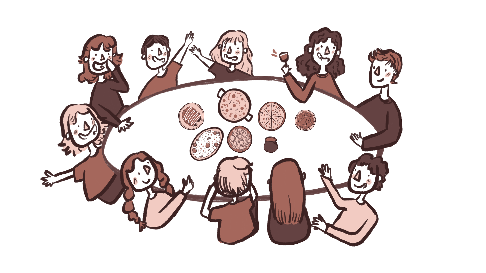
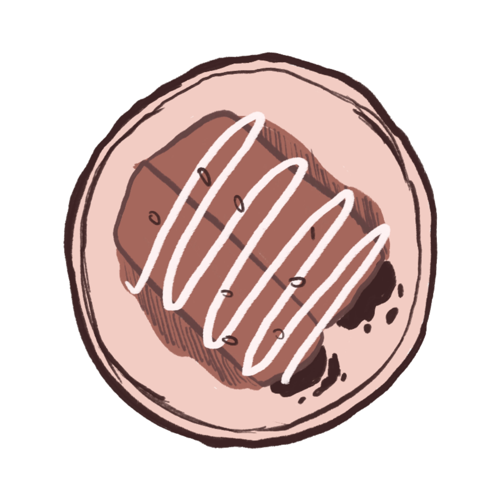
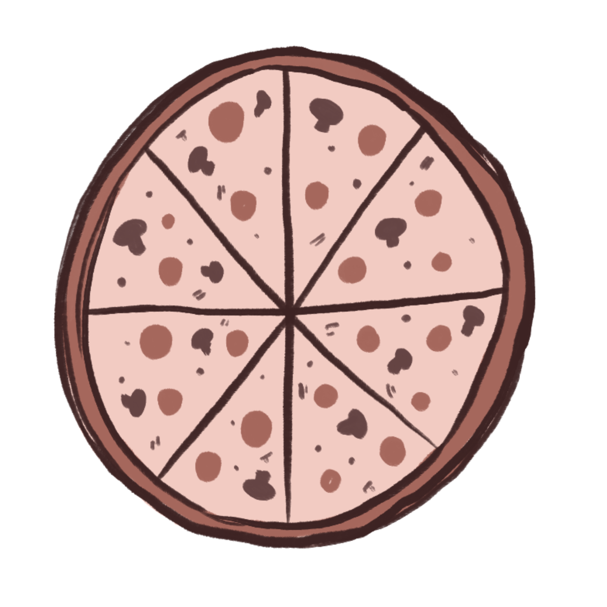
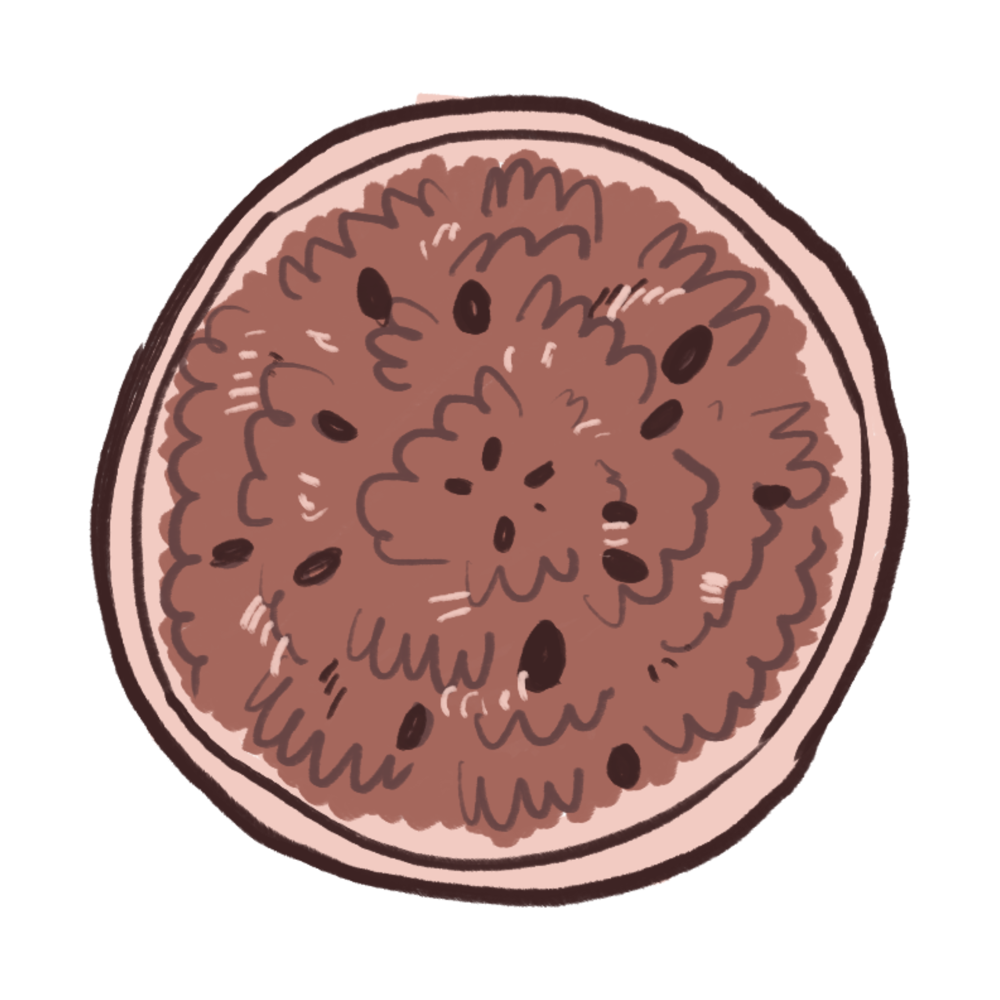
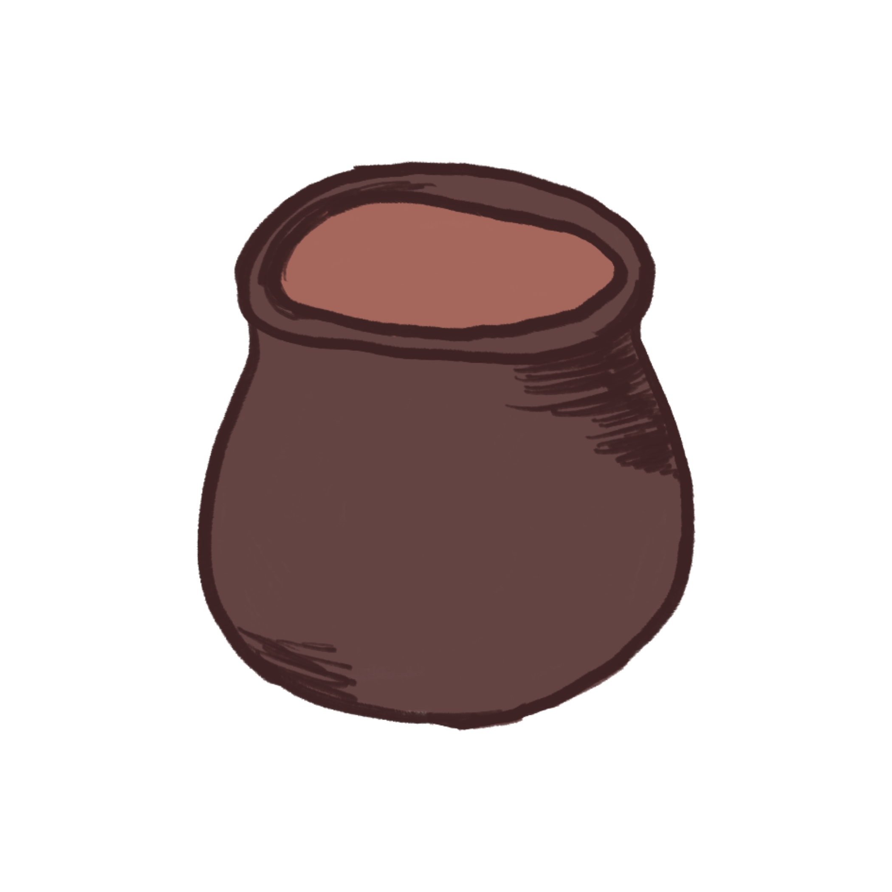
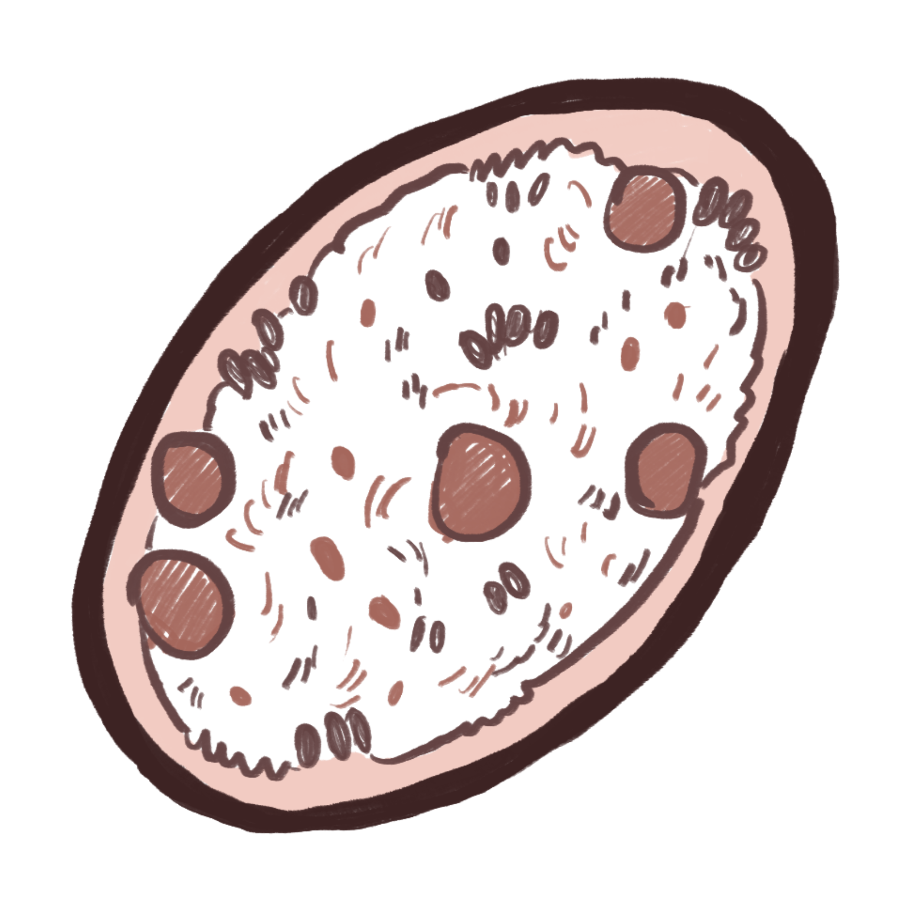
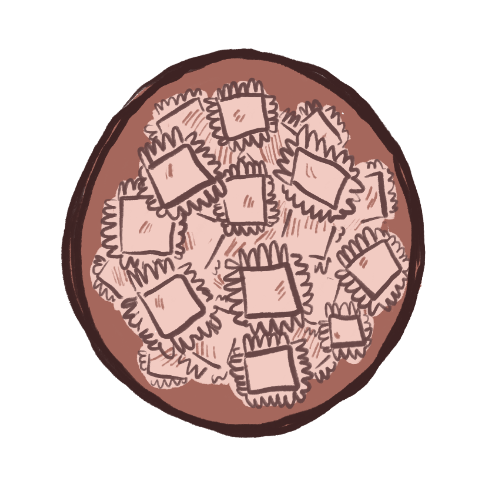

PUMPKIN MOLE ENCHILADAS
The Story
This dish started as a way to bring people together when the weather turned cool. I had some leftover pumpkin puree and started experimenting, blending it with the deep flavors of mole. You can even invite guests to be a part of the process, allowing them to fill and roll the tortillas themselves before drenching it in the rich mole sauce. It's a dish that is a perfect addition to inviting fall gatherings.
Ingredients
-
For the pumpkin mole sauce:
- 1 Tbsp olive oil
- ½ onion, diced
- 2 garlic cloves, minced
- 1 cup pumpkin purée (canned or homemade)
- 1 Tbsp tomato paste
- 1 tsp ground cumin
- 1 tsp smoked paprika
- 1 tsp chili powder (adjust for heat)
- ½ tsp cinnamon
- ½ tsp cocoa powder (unsweetened)
- 1 cup vegetable broth
- 1 Tbsp almond butter or peanut butter
- 1 tsp maple syrup
- Salt & pepper, to taste
-
For the enchiladas:
- 4–6 corn or flour tortillas
- 1 cup black beans (cooked or canned, rinsed)
- 1 cup roasted vegetables (sweet potato, zucchini, or bell peppers work great)
- ½ cup vegan cheese (optional, for filling or topping)
- Fresh cilantro or green onions, for garnish
Instructions
-
Make the pumpkin mole sauce
- In a skillet, heat olive oil over medium heat. Sauté onion and garlic until soft and fragrant.
- Stir in pumpkin purée, tomato paste, cumin, smoked paprika, chili powder, cinnamon, and cocoa powder. Cook for 1–2 minutes.
- Add broth, nut butter, and maple syrup. Stir until smooth and slightly thickened (5–7 minutes). Adjust seasoning with salt & pepper.
-
Prepare the filling
- In a bowl, mix black beans and roasted veggies. Add a spoonful of mole sauce to lightly coat.
-
Assemble enchiladas
- Preheat oven to 375°F (190°C).
- Warm tortillas to make them flexible. Spoon filling into each tortilla, roll up, and place seam-side down in a baking dish.
- Pour mole sauce over the top and spread evenly. Sprinkle with vegan cheese if using.
-
Bake
- Cover with foil and bake for 15 minutes. Remove foil and bake another 10 minutes until heated through and edges crisp slightly.
-
Serve
- Garnish with cilantro or green onions. Serve hot with a side of rice or a simple salad.


COMMUNITY PIZZA
The Story
This pizza started on a night when everyone wanted something different. One person wanted pesto, another wanted mushrooms, and someone else just wanted WAY more cheese. We rolled out the dough together and filled the table with toppings like olives, peppers, and fresh herbs from the garden. It became a small tradition, a make-your-own night where everyone gets a slice that fits them.
Base Dough
- 2¼ tsp active dry yeast (1 packet)
- ¾ cup warm water
- 1 tsp sugar
- 2 cups all-purpose flour
- 1 tsp salt
- 1 tbsp olive oil
Sauce
- 1 cup crushed tomatoes
- 1 clove garlic, minced
- 1 tsp olive oil
- ½ tsp oregano
- Salt & pepper, to taste
Topping Suggestions
- Mozzarella, feta, or cashew cheese
- Bell peppers, mushrooms, or zucchini
- Cherry tomatoes or sun-dried tomatoes
- Spinach, basil, or arugula
- Olives, red onion, or roasted garlic
- Chili flakes or balsamic glaze to finish
Instructions
- Activate the Yeast
- Mix warm water, sugar, and yeast in a small bowl. Let it sit for 5–10 minutes until foamy.
- Make the Dough
- In a large bowl, combine flour and salt. Add olive oil and the yeast mixture.
- Knead until smooth and elastic, about 5–7 minutes. Cover and let rise for 45 minutes to an hour.
- Prepare the Sauce
- While the dough rises, heat olive oil in a pan. Add garlic, cook for 30 seconds, then stir in tomatoes and oregano.
- Simmer 10 minutes, season with salt and pepper, then cool slightly.
- Assemble
- Preheat oven to 475°F (245°C). Roll out the dough on a floured surface.
- Spread a thin layer of sauce, then let everyone add their favorite toppings.
- Bake
- Transfer to a baking sheet or stone and bake 10–14 minutes, until the crust is golden and cheese is bubbling.
- Serve & Share
- Slice and serve hot, swapping stories and bites. Every pizza ends up different, but it’s always shared.

Beignets
The Story
I fell in love with beignets after a trip to New Orleans, but I didn’t learn how to make them until my roommate brought back a beignet mix box from Café du Monde. After that, I went all in. I’d make huge batches and pack them into little boxes to hand out to friends. They’re soft, warm, and completely covered in powdered sugar, which is exactly how they should be. I've outgrown the box mix and experimented repeatedly until perfected a recipe of my own.
Ingredients
- ¾ cup warm water
- 1 packet active dry yeast (2¼ tsp)
- ¼ cup sugar
- 1 egg
- ½ cup milk
- 3 tbsp melted butter
- 3½–4 cups all-purpose flour
- ½ tsp salt
- Neutral oil for frying
- Powdered sugar, for finishing
Instructions
- Activate the Yeast
- In a bowl, mix warm water, sugar, and yeast. Let it sit 5–10 minutes until foamy.
- Make the Dough
- Whisk in the egg, milk, and melted butter.
- Add flour and salt, mixing until a soft dough forms.
- Knead 3–5 minutes until smooth. Cover and let rise for 1 hour.
- Roll and Cut
- On a floured surface, roll the dough to about ¼ inch thick.
- Cut into squares—rustic edges are totally fine.
- Fry
- Heat oil to 350°F (175°C).
- Fry a few pieces at a time, turning once, until puffed and golden.
- Drain on paper towels.
- Finish
- Dust generously with powdered sugar and serve warm. Best eaten right away.

Naani's Chai
The Story
This chai will always remind me of my Naani. She uses Society Tea leaves and never measures a thing and she knows when its the right time based on the color (no timers!). She’d let the water and sugar boil before adding milk, standing over the stove keeping a careful eye. I learned to make it the same way, and now I share it with friends on quiet mornings or long afternoons. It’s a small way to share her warmth with my new found family and communities.
Ingredients
- 1 cup water
- 2 teaspoons loose Society Tea leaves (or any strong black tea)
- 2 teaspoons sugar (adjust to taste)
- ½ cup milk
- Optional: a small piece of ginger or a pinch of cardamom
Instructions
- Boil the Base
- In a small pot, bring water to a boil.
- Add sugar and tea leaves. Let it boil for about 2–3 minutes until the water darkens and the aroma deepens.
- Add Milk
- Pour in the milk and reduce the heat slightly.
- Let the chai heat until it begins to rise, then turn off the stove before it spills over.
- Strain & Serve
- Strain the tea into cups and serve hot.
- Enjoy it with biscuits, a good story, or quiet company.


CHAAT
The Story
Chaat is one of those things that everyone makes differently. Some like it spicy, some like it sweet, and some just want all the toppings. I started making it because it’s fun to put out a bunch of ingredients and let everyone build their own. It’s an easy way to get people talking, trying new things, and sharing what they like. There’s always a little bit of a mess, but that’s part of the fun.
Ingredients
- 2 medium potatoes, boiled and cubed
- 1 cup cooked chickpeas
- 1 small red onion, finely chopped
- 1 tomato, diced
- 1 green chili, finely chopped (optional)
- 1 tsp chaat masala
- ½ tsp cumin powder
- Salt to taste
- Lemon juice, to taste
Topping Suggestions
- Tamarind or mint chutney
- Yogurt or vegan yogurt
- Mango pieces or pomegranate seeds
- Sev or crushed papdi
- Fresh cilantro
Instructions
- Mix the Base
- Combine potatoes, chickpeas, onion, tomato, and green chili in a large bowl.
- Add chaat masala, cumin, salt, and lemon juice. Toss gently to mix.
- Customize
- Spread the base on plates or in small bowls.
- Top with chutneys, yogurt, sev, and anything else you like.
- Serve
- Serve immediately so everything stays crisp.
- Perfect for a chaat bar setup. Let everyone build their own combination.

RAVIOLI
The Story
What looks like a fancy meal is actually suprising simple and fun to make. This recipe started as a way to use up bits of leftover fillings like ricotta from lasagna, roasted veggies from dinner, or even mashed pumpkin from fall cooking. Now it’s become something I make when I want to slow down and share food with others. Everyone can help roll the dough, shape the ravioli, or pick their own fillings. It’s simple, a little messy, and always feels like a small celebration.
Ingredients
- 1 cup all-purpose flour (or ½ AP + ½ semolina for more chew)
- ¼ tsp salt
- 2 tbsp olive oil
- ~⅓ cup warm water (add slowly; may need a little less)
Filling Ideas
- Pumpkin + vegan ricotta
- Mushroom + herbs
- Spinach + vegan ricotta”
- Roasted garlic + lemon zest
Instructions
- Make the Dough
- Combine flour and salt in a bowl or on a clean counter.
- Make a well in the center, add olive oil, and slowly pour in warm water.
- Mix until a dough forms, then knead 6–8 minutes until smooth and elastic.
- Cover and rest 30 minutes at room temperature.
- Roll & Fill
- Cut dough in half and roll each piece thin (1–2mm) on a floured surface.
- Drop small spoonfuls of filling, about 1 tsp each, spaced 1–2 inches apart.
- Brush around filling with water, lay the second sheet over, and seal edges.
- Cut into squares and press with a fork to seal.
- Cook the Ravioli
- Bring a large pot of salted water to a gentle boil.
- Cook ravioli 3–4 minutes or until they float and look slightly translucent.
- Remove with a slotted spoon.
- Finish with Sage Butter
- In a skillet, melt 2 tbsp vegan butter until golden.
- Add 3–4 sage leaves and fry until crisp.
- Toss ravioli gently in the sage butter.
- Optional: add toasted walnuts or a drizzle of balsamic glaze.

VEGETARIAN PAELLA
The Story
This dish is the one to make when you want something that looks impressive without taking over your whole night. It tastes as good as it looks and comes together easily, even when you’re juggling other sides. The first time I tried it was at a small dinner where I asked everyone to bring one ingredient to share, like chickpeas, peppers, or a handful of herbs. Now it’s my go-to when I want something that feels simple but still special. It scales up well, it’s fun to customize, and it always pulls people toward the table before it’s even finished cooking.
Ingredients
- ¾ cup short-grain rice
- 1½–2 cups vegetable broth
- 1 tbsp olive oil
- ½ small onion, finely diced
- 2 cloves garlic, minced
- ½ tsp smoked paprika
- ¼ tsp turmeric (or saffron for a more traditional flavor)
- Salt & pepper, to taste
Topping Suggestions
- Red bell pepper, sliced into strips
- Cherry tomatoes, halved
- Artichoke hearts
- Cooked chickpeas
- Lemon wedges

Instructions
- Prep the Pan
- Heat olive oil in a wide, shallow skillet over medium heat.
- Add onion and garlic and cook 3–4 minutes until softened.
- Build the Base
- Stir in smoked paprika and turmeric (or saffron). Toast 30 seconds to release flavor.
- Add rice and stir to coat evenly with oil and spices. Cook 1–2 minutes until edges look slightly translucent.
- Add the Broth & Veggies
- Pour in warm broth (start with 1½ cups) and spread rice evenly. Don’t stir again once it’s spread out.
- Add your toppings: bell peppers, cherry tomatoes, artichokes, and chickpeas.
- Season with salt and pepper.
- Cook the Paella
- Bring to a simmer, then reduce heat to medium-low.
- Cook uncovered for 20–25 minutes, until rice is tender and liquid is mostly absorbed.
- If the rice isn’t done but the pan is dry, add a splash of warm broth.
- Optional: Make the Crispy Bottom
- Increase heat to medium-high for 1–2 minutes to toast the bottom slightly. It should smell toasty, not burnt.
- Finish & Serve
- Remove from heat, cover with a clean towel, and let rest 5 minutes.
- Top with fresh parsley and serve with lemon wedges.